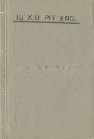
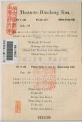

Languages
台文
｜
中文
｜
日本語
｜
English
字體
小
｜
中
｜
大
首頁
/
白話字數位典藏
白話字數位典藏全文檢索
查詢模式
選擇年代
清國時代(1885-1895)
日本時代(1895-1945)
戰後(1945-1969)
1885-1895
1896-1905
1906-1915
1916-1925
1926-1935
1936-1945
1946-1955
1956-1965
1966-1969
1970-1980
1980-1990
1990-2000
2000-2010
2010-
選擇文類
詩
散文
小說
戲劇
傳記
選擇作者
陳清忠
陳清義
編輯部
柯設偕
吳天命
明有德
偕叡廉
周天來
劉華義
王守勇
林茂生
陳添旺
柯維思
王占魁
賴仁聲
陳瓊琚
雪峰逸嵐
吳清鎰
郭水龍
蕭樂善
許水露
葉金木
陳金然
章王由
廖得
鄭連坤
潘道榮
楊士養
梁秀德
劉約翰
周淑慧
高金聲
林燕臣
黃六點
蔡愛義
許有才
主筆
巴克禮
陳鳩水
郭朝成
張基全
陳明清
陳能通
拾穗生
顏振聲
卓恆利
傳道局
胡文池
劉主安
鄭兒玉
Google Search
Yahoo Search
全部
刊名
標題
標題(教羅)
全文
全文(教羅)
作者
第48頁，共53頁(共1,058筆資料) 0.74216914176941sec
1
...
46
47
48
49
50
...
53
To Page
GO
文字列表
圖文列表
排序
日期
文類
刊名
作者
影像
[1963-2 台灣教會公報 文類-散文 作者--/-]
相佮想五分鐘 [ Saⁿ-kap siūⁿ Gō͘ Hun-cheng ]
Normal 0 0 2 false false false MicrosoftInternetExplorer4 /* Style Definitions */ table.MsoⁿormalTable {mso-style-name:表格內文; mso-tstyle-rowband-size:0; mso-tstyle-colband-size:0; mso-style-noshow:yes; mso-s...
[1963-3 台灣教會公報 文類-散文 作者--/-]
女性的美德 [ LÚ-SÈNG Ê BÍ-TEK ]
Normal 0 0 2 false false false MicrosoftInternetExplorer4 st1\:*{behavior:url(#ieoo͘i) } /* Style Definitions */ table.MsoⁿormalTable {mso-style-name:表格內文; mso-tstyle-rowband-size:0; mso-tstyle-colb...
[1963-5 台灣教會公報 文類-散文 作者--/-]
我的母親 [ GOÁ Ê BÚ CHHIN ]
Normal 0 0 2 false false false MicrosoftInternetExplorer4 st1\:*{behavior:url(#ieoo͘i) } /* Style Definitions */ table.MsoⁿormalTable {mso-style-name:表格內文; mso-tstyle-rowband-size:0; mso-tstyle-colb...
[1963-5 台灣教會公報 文類-散文 作者--/-]
雪中送炭 [ Seh tiong sàng thoàⁿ ]
Normal 0 0 2 false false false MicrosoftInternetExplorer4 /* Style Definitions */ table.MsoⁿormalTable {mso-style-name:表格內文; mso-tstyle-rowband-size:0; mso-tstyle-colband-size:0; mso-style-noshow:yes; mso-s...
[1954-1 淡江中學白話字史料(編修) 文類-散文 作者--/-]
(22)
Âng Lô-pek [ Âng Lô-pek ]
...
[1927-5 芥菜子 文類-散文 作者--/-]
(4)
教囝的法度 [ Kà kiáⁿ ê hoat-tō͘ ]
教囝的法度 第一章 修身 修身的道，有兩項要緊。 1、(持防臨時的災厄)。 就是教囝兒著閃避火，毋通徛佇khàm-kîⁿ 危險的所在，毋通去水深的位，毋通行佇薄冰的頂面，放炮仔，算是無路用，拍損錢，閣會傷著別个囡仔，逐款的毒蟲，毋通予伊趖入厝內，所食的果子，伊的子毋通吞落去，用喙齒咬果子的殼：快拍歹喙齒，逐時做代誌，著持防未來的災厄。 2、(致意衛生的法度。) 親像東爿遮个國的婦人人，看見伊的囝兒身軀lám，就用濟濟款的法度來照顧伊，向望伊的勇健，可惜較濟放sak有路用的法度，一款無開化的老母，若拄著伊的囝兒破病的時，掠做是歹神teh作弄，就用符予伊蹛身軀，用三牲來祭獻。伊想按...
[1941-9 台灣教會公報 文類-散文 作者--/-]
高中通訊 [ Ko Tiong Thong-sìn ]
高中通訊 1941年9月678期 8-10 II.上帝的權能佮警戒 上帝款待恁親像囝，thài-thó有囝無予老爸警戒啊 (希伯來12：7)。 有時佇咱信徒的信仰經驗中有濟濟奇異的神跡予科學家真僫理解，僫信。總是這號事咱毋通看做是迷信，因為是上帝的權能欲顯明伊的所做。 記者佇過去的2月27日，有倒去本鄉沙山欲赴我的外甥的結婚式，in是蹛佇路上厝，全莊300外戶無人拜上帝，只有我的大姊佮伊的囡仔(我的姊夫也無)爾定。逐項的備辦是佔基督教式無參插叫in著拜祖公，孝天地，謝神，總是我的大姊的信仰堅固無搖動，伊講阮欲拜大的神上帝，無拍算到佇欲娶新娘的進前暝有發生兩件事：1)一个查...
[1933-11 台灣教會公報 文類-散文 作者--/-]
夏季學校 [ Hā-kuì Ha̍k-hāu ]
夏季學校 1933.11 584 卷 p.6 1.旗山 七月20號，頂晡7、8點，校長吳劉氏響，揣學生禮拜開會，分科讀冊。逐日有5點鐘的課程。讀冊、學詩歌、學寫字，講故事(舊約歷史)。有運動，有遠足。全務教員：蕭Bêng-chiok，吳氏毋纏，吳氏照月。助教員：張明道，羅約伯，吳氏Chhoan-eng，吳Ki-seng，廖Kan-siok。學生總數55名，平均出席40名。 八月24號，午後7點閉校式，學藝會，有賞品 12名，有û-hèng。食茶餅，大家真歡喜，9點散會。 這班受著神學生蕭 Bêng-chiok，羅約伯等的盡力，無嫌著磨佇阮的夏季學校，有得著大進步，著...
[1934-12 台灣教會公報 文類-散文 作者--/-]
頭社教會 [ Thâu-siā Kàu-hoē ]
頭社教會 1934.12，no.597，pp.17 Chan，Pak tuî聯合佈道(對10：23-25號)，佇大內庄方面，24號早起，隊員一行訪問頭社教會佮訪問會友。 頭社教會是佇昭和3年建築--的，猶真新；總是彼个歷史是真舊。場所是佇大路頭，真向陽，宛然是頭社的嚨喉。遮是山間的所在，樹木不時青翠，清靜，真合敬拜上帝的所在。 現在有70外人咧禮拜，教勢不止順序。現時李同傑先生佇遮咧牧會，伊做工倚30年久，為主咧干證道理。社內青年真濟，不止咧欣慕青年傳道師來活動，的確有通向望。...
[1934-12 台灣教會公報 文類-散文 作者--/-]
大內教會 [ Toā-lāi Kàu-hoē ]
大內教會 1934.12，no.597，pp.17-18 內庄的人不止欣慕道理，一般的人真有理解。現時咱的說教所是對組合長楊雲祥先生，無料借咱用；也女傳道的宿舍也是對厝主林清中君無料借咱用，實在著大大感謝天爸佮共in二位說謝。 現在每禮拜的出席有40外名；佇麾下中有請神學生將Bō͘-sêng君佮吳德元君來做工，開夏期學校，每日倚50个囡仔來讀冊，成績不止好。 對10月23到25號，佇市場邊有開佈道會，庄民真贊助，不止肅靜來聽，雖然是到尾，猶有50外人teh聽。這幫佇大內方面佈道3暗，講5回，聽眾有530个。 這幫的佈道會，有受著楊雲祥先生，陳金榜先生佮郭天恩先生，in...

[1917-1 台大楊雲萍文庫白話字史料(編修) 文類-散文 作者--/-]
(45)
有求必應 [ Iú kiû pit èng ]
...

[不詳 台大楊雲萍文庫白話字史料(編修) 文類-詩 作者--/-]
(7)
傳道奮興歌 [ Thoân-tō hùn-heng koa ]
...
[1922-1 台大楊雲萍文庫白話字史料(編修) 文類-詩 作者--/-]
(62)
孩童聖歌 [ Hâi-tông Sèng-ko ]
...
[1906-1 台大楊雲萍文庫白話字史料(編修) 文類-詩 作者--/-]
(66)
頌主神詩(客語) [ Siùng Chú Shîn Si ]
...
[1897-4 台南府城教會報 文類-詩 作者--/-]
大福氣 [ Toā hok-khì ]
大福氣1897.04 145 卷 p.301細漢囡仔佮大人蹛世間暫時，向望佇天無閣相離這算大福氣，永遠大大福氣，
[1897-8 台南府城教會報 文類-詩 作者--/-]
新翻譯的詩 [ Sin hoan-e̍k ê Si ]
新翻譯的詩1897.08 149卷 p.641.耶穌時常佇我身邊，實在疼我到極，情願離開天頂富貴，顧阮細子盡力。2.你的面貌榮光燦爛，近倚，我看bē見，雖罔細聲kap我講話，我聽攏無入耳。3.
[1898-1 台南府城教會報 文類-詩 作者--/-]
心適歌 [ Sim-sek Koa ]
心適歌。 (廈門女學的學生做--的。) 1898.01 第154卷 p.4-6 1 起頭空空無天地， 親像烏暗滿四界， 三位一體真主宰， 聖神運動佇彼內。 2 主宰的名耶和華， 至聖至尊至懸大， 並無起頭無路尾， 平平永永做上帝。 3 天地萬物伊創造， 講有彼號就彼號， 頭日上帝講著光， 就分早起佮ê昏。 4 二日造天號穹蒼， 予頂下水無相通， 三日分水佮礁地， 發生樹木佮菜蔬。 5 四日創造日月星， 來分日暝定時年， 五日造鳥佮魚鱉， 山上有鳥海有魚。 6 六日造獸六畜虫， 兼造男女各1人， 七日萬物攏齊備， 上帝安歇賜福氣...
[1898-8 台南府城教會報 文類-詩 作者--/-]
約瑟歌 [ Iok-sek koa ]
約瑟歌1898.08 161卷 p.58-59(鹿港，李本做--ê。)1.早有1人名叫約瑟，Tiàm tī 迦南行孝大德，Toà父ê家年近17，兄弟照排算第11。 2.雅各到老才生約瑟，比疼眾子溺愛到極，就kā約瑟做出suí 衫，眾兄看了歹話相加。 3.頭擺夢中kap兄hâ 稻，眾兄所hâ圍拜左右，二擺koh夢日月kap星，父兄心內聽了逆耳。 4. 一日眾兄To-tan飼羊，約瑟奉命就去山場。眾兄遙看小弟beh 到，想出計策坐teh 聽候。 5.流便為著骨肉至親，ài救小弟去見父面，曠野中間tu有礁井，就將約瑟hiat tī hit 底。 6.米甸客商埃及貿易，謀害小弟猶大計策，較好賣銀hō͘...
[1898-9 台南府城教會報 文類-詩 作者--/-]
約瑟歌 [ Iok-sek koa ]
約瑟歌1898.09 162卷 p.72(接前卷第59面。)29.法老聽了心受感激，盡在o-ló gâu 兼智識；隨時賜權hō͘ 伊治理，就將宰相來敕封伊。 30.Hit 時續立歸群總督，設法照顧治理本國；好冬7 年用二抽1，歹冬到期就免喪失。 31.法老遍行埃及4方，7年好收積聚粟倉；轉眼算--來續接歹冬，四界欠食米糧空空。 32.雅各真知埃及有粟，就叫眾子求糴即刻；逐家到位跪拜約瑟，眾兄m̄-bat 約瑟明白。 33.約瑟追記早前所夢，目屎流落實在苦痛；故意試兄反悔前非，刁難西緬暫留勿歸。 34.著chhoā 小弟便雅憫來，憑據所講才有實在；大家參詳希伯來音，講起歸罪就是現今。 35.求糴...
[1900-4 台南府城教會報 文類-詩 作者--/-]
耶穌iáu chhoā路 [ Iâ-so͘ iáu chhoā-lō͘ ]
耶穌iáu chhoā路1900.04 181卷 p.31[下面hiah ê大碼子就是詩調：其餘hiah-ê較細字是中kap低調，人kiám-chhái袂曉吟是無要緊。]1.耶穌iáu chhoā 路，到天堂門戶；道路雖然青凊難行。咱著堅心好膽進前；願主手來牽到祖家平安。 2.天路雖冷靜，對敵雖極盛，M̄ 准giâu 疑驚惶纏咱；M̄ 准信心向望離咱；雖tu kiû仇濟，到祖家穩會。 3.咱有久煩惱，祈禱就會無；雖然koh再tu著試煉，求主贊我吞忍無siān;天開hō͘ 我看，憂悶就消散。 4.耶穌iáu chhoā 路，到天堂門戶；天頂救主猶原指示，常常安慰，扶持保庇，Hō͘咱穩當到Tiàm...
第48頁，共53頁(共1,058筆資料)
1
...
46
47
48
49
50
...
53
To Page
GO
數位典藏國家型科技計劃
拓展台灣數位典藏計畫
版權所有 國立台灣師範大學 台灣文化及語言文學研究所©2008
10610 台北市和平東路一段162號│TEL 02-7734-5516│Fax 02-2358-2461
計劃簡介
典藏特色
執行架構
計畫典藏數位化流程
成員介紹
台灣白話字發展簡介
巴克禮牧師與《台灣教會公報》
廈門話字典-杜嘉德
白話字教學-打馬字
中國南方白話字發展
台灣基督教長老教會簡表
台灣基督教長老教會教會歷史委員會
《北部台灣基督長老教會教會ê歷史》
關於陳清忠
白話字文學：台灣文學的早春